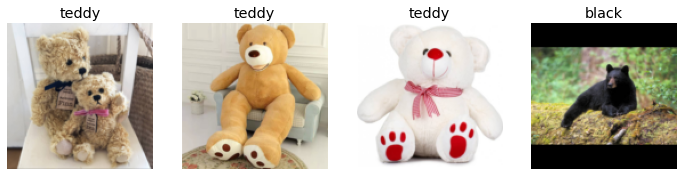
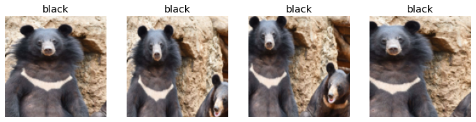
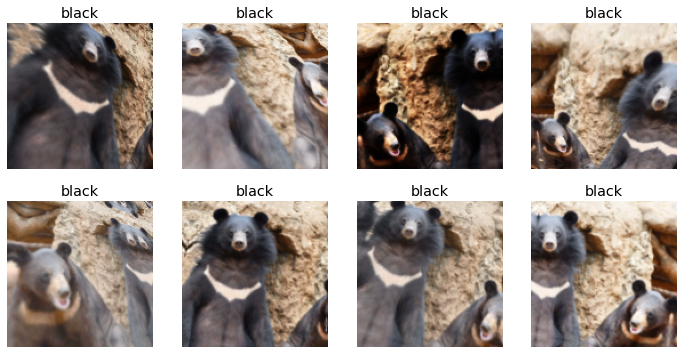
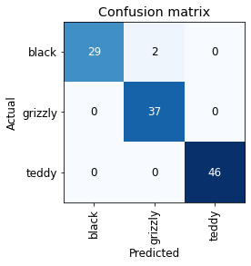

|████████████████████████████████| 719 kB 5.0 MB/s
|████████████████████████████████| 5.3 MB 59.8 MB/s
|████████████████████████████████| 441 kB 71.2 MB/s
|████████████████████████████████| 1.3 MB 49.3 MB/s
|████████████████████████████████| 1.6 MB 28.8 MB/s
|████████████████████████████████| 212 kB 71.2 MB/s
|████████████████████████████████| 163 kB 71.3 MB/s
|████████████████████████████████| 115 kB 56.6 MB/s
|████████████████████████████████| 127 kB 72.1 MB/s
|████████████████████████████████| 115 kB 70.4 MB/s
|████████████████████████████████| 7.6 MB 51.7 MB/s
Mounted at /content/gdrivePractice of Deep Learning
- As we saw in the previous Chapter, we can create powerful model with only 6 lines of code
- Althought we should understand the constraints of the process and not overestimate the capabilities of deep learnig, this may lead to frustaingtly poor result
- Also we need to not overestimate the constraints, and underestimate what could do with deep learning
The mindset Of Deep Learning Practitioner
- Before starting any Deep learning project, we need first to investigate the data availability
- That doens’t mean we need the Perfect dataset
- We need to iterate from End-2-End
- Do not spent weeks on fine-tuning, polishing the GUI, or desing the perfect way of labeling the dataset
- Just complet each step in a reasonable amout of time, then iterate the whole proccess from beginning
- Iteration shows the flows of your project as well as its capabilities
- The early Demo of your project helps you to have feedback and try to do better
- Start a project in field that Deep Learning already been shown good results
The Drivetrain Approach

- In this article -Jeremy Howard, Margit Zwemer and Mike Loukides- talks about the driventain approach for building a great data product through Four-Steps process
- Steps
- Define your Objective
- Levers
- What inputs can we control?
- The necessary actions the realise that Objective
- What inputs can we control?
- Data
- What Data can we collect
- What Data can we collect
- Models
- Build a model that make us meet our objective, but also in respect to: Levers an Data
- Define your Objective
Data Gathering
In this Chapter we will build a model that can differentiate among 3 types of bears: Grizzly, Black, Teddy-bear.
Often we can find the data we need for a project online. In our case we will collect data from search enging DuckDuckGo
But first we need to install the fastai package and import some dependecies since I’m working on Google Colab
(100,
'https://i2.wp.com/nypost.com/wp-content/uploads/sites/2/2020/09/grizzly-bear-89.jpg?quality=90&strip=all&ssl=1')
101.54% [229376/225897 00:00<00:00]
# now let's create our dataset
bear_types = 'grizzly','black','teddy' # create 3 types of bears variable
path = Path('bears') # create the father folder for the 3 types
if not path.exists(): # decide the path
path.mkdir()
for o in bear_types:
dest = (path/o) # put the 3 folder in bear folder
dest.mkdir(exist_ok=True) # create a folder for each type of bear
urls = search_images_ddg(f' {o} bear') # search images for each bear type
download_images(dest, urls=urls) # download these images from urls and put them in their correspondent folder(#3) [Path('bears/black'),Path('bears/teddy'),Path('bears/grizzly')](#581) [Path('bears/black/2fe59e51-e056-472e-8b1f-97719f4daead.jpg'),Path('bears/black/1cf3beed-5b8b-4ef2-bb6b-9bb185c7b7ed.jpg'),Path('bears/black/942f89fe-6ce0-4f8a-8219-05878694bf92.jpg'),Path('bears/black/67e6baaf-469c-46c2-925a-657290ed6f54.jpg'),Path('bears/black/d58d87bc-e2c9-40e0-ae36-a81cdf30169a.jpg'),Path('bears/black/b7a58f5b-0aeb-4785-ba7d-b3c4003555cf.JPG'),Path('bears/black/f0c103ab-c50f-45c1-81d4-805e20e9e942.JPG'),Path('bears/black/2be0ed55-3ea2-413a-bc78-a2e00cff5c86.jpg'),Path('bears/black/9840ba3a-3582-44eb-b25a-17d5d65abb4d.jpg'),Path('bears/black/3bcd5a1c-b41a-4edc-815b-6f36435be8e3.jpg')...](#195) [Path('bears/black/2fe59e51-e056-472e-8b1f-97719f4daead.jpg'),Path('bears/black/1cf3beed-5b8b-4ef2-bb6b-9bb185c7b7ed.jpg'),Path('bears/black/942f89fe-6ce0-4f8a-8219-05878694bf92.jpg'),Path('bears/black/67e6baaf-469c-46c2-925a-657290ed6f54.jpg'),Path('bears/black/d58d87bc-e2c9-40e0-ae36-a81cdf30169a.jpg'),Path('bears/black/b7a58f5b-0aeb-4785-ba7d-b3c4003555cf.JPG'),Path('bears/black/f0c103ab-c50f-45c1-81d4-805e20e9e942.JPG'),Path('bears/black/2be0ed55-3ea2-413a-bc78-a2e00cff5c86.jpg'),Path('bears/black/9840ba3a-3582-44eb-b25a-17d5d65abb4d.jpg'),Path('bears/black/3bcd5a1c-b41a-4edc-815b-6f36435be8e3.jpg')...](7,
(#7) [Path('bears/teddy/49c3ae24-62de-4ae8-aa6f-406423348619.jpg'),Path('bears/teddy/822c52a8-995f-46a5-a86e-9c5eed47e732.jpg'),Path('bears/teddy/9e747533-58c5-4005-9aab-d91d55468a1d.jpg'),Path('bears/teddy/9e1f043c-ecaf-4db3-bb7c-af4dbd3c04a0.jpg'),Path('bears/teddy/2432bf79-a4e6-4858-b23a-15f2e2ee6a0e.jpg'),Path('bears/teddy/d21046b0-0711-48cd-84fb-a042107b0d2f.jpg'),Path('bears/grizzly/5979d5e8-031e-4b33-901b-903975e49af6.jpg')])From Data to DataLoaders
The dataset that we’ve created still isn’t ready to be used in the training fase, we still need to make suitable for the model, in order to do that we need DataBlock and DataLoaders
Dataloaders
A thin fastai class that just stores whatever DataLoader objects passed to it and makes them available as the properties
trainandvalidProvides the data for your model
Information needed to turn downloaded data into DataLoaders objects * The kind of data we are working with * How to get the list of items * How to label these items * How to create the validation set
Dataloder
- A class that provides batches of a few items at a time to the GPU
Data block API
- A flexible system to fully customize every stage of the creation of your DataLoaders
- Data block: a template for creating a DataLoaders object
- Independent variable: the thing we are using to make predictions
- Dependent variable: the target variable to predict
- Training data is fed to a model in batches
- Each image in a batch needs to be the same size
bears = DataBlock(
blocks=( # Define blocks for data and labels
ImageBlock, # TransformBlock for Images
CategoryBlock), # TransformBlock for labels
get_items=get_image_files, # Get images from the path
splitter=RandomSplitter(valid_pct=0.2, seed=42), # Create training set, and training set (20% of dataset) randomely
get_y=parent_label, # Label `item` with the parent folder name
item_tfms=Resize(128)) # Resize and crop image to 128x128By default Resize crop the image into a square of the requested size, but that can result losing some important details which will negatively impact the model performance. Fastai provide many methods that we can use, we can squatsh, pad(with zeros) or stretch the images:

The problem with these approaches, is that they add detaills and they mess with the original images, which will certainely influence the learnings of the model, this will effect the accuracy of the model later.
Instead, we could randomly crop a part of the image, one part at the time (each epoch) and pass it to the training process, what will force the model to focus on recognizing different features of the image each time.
The method
RandomResizedCropallow us to transform images in the way we just described
# Create a new `DataBlock` that picks a random scaled crop of an image and resize it to 128x128
bears = bears.new(item_tfms=RandomResizedCrop(128, min_scale=0.3))
dls = bears.dataloaders(path)
# Show some unique random crops of a single sample from the validation set
dls.train.show_batch(max_n=4, nrows=1, unique=True)
Data augmentation
- Data augmentation refers to creating random variations of the data, such as they appears different, but without changing the real meaning of the data.
- Examples of common data augmentation techniques for images are rotation, flipping, perspective warping, brightness changes and contrast changes.
- It seems that for natural image like the ones we have here, the function:
aug_transformsworks well- because our images have different size, using the parametrs
batch_tfmsand feeding them to GPU will save use a lot of time.
- because our images have different size, using the parametrs
# Create a new `DataBlock` that crops and resizes each image to 128x128
# and applies a list of data augmentations including flip, rotate, zoom, warp, lighting transforms
# to each batch on the GPU
bears = bears.new(item_tfms=Resize(128), batch_tfms=aug_transforms(mult=2))
dls = bears.dataloaders(path)
dls.train.show_batch(max_n=8, nrows=2, unique=True)
Training Your Model, and Using It to Clean Your Data
- Cleaning data and getting it ready for your model are two of the biggest challenges for data scientists
- Data scientists say it takes 90% of their time
- Using the model for data cleaning
- Train the model on the current dataset
- Examine the incorrectly classified images with the highest confidence score
- There might be images that were incorrectly labeled
- Examine the incorrectly labeled images with the lowest confidence scores
- There might be poor quality images in the training set
- Move any misplaced images to the correct folder
- Remove any poor quality images
- Retrain model on updated dataset
/usr/local/lib/python3.7/dist-packages/torchvision/models/_utils.py:209: UserWarning: The parameter 'pretrained' is deprecated since 0.13 and will be removed in 0.15, please use 'weights' instead.
f"The parameter '{pretrained_param}' is deprecated since 0.13 and will be removed in 0.15, "
/usr/local/lib/python3.7/dist-packages/torchvision/models/_utils.py:223: UserWarning: Arguments other than a weight enum or `None` for 'weights' are deprecated since 0.13 and will be removed in 0.15. The current behavior is equivalent to passing `weights=ResNet18_Weights.IMAGENET1K_V1`. You can also use `weights=ResNet18_Weights.DEFAULT` to get the most up-to-date weights.
warnings.warn(msg)
Downloading: "https://download.pytorch.org/models/resnet18-f37072fd.pth" to /root/.cache/torch/hub/checkpoints/resnet18-f37072fd.pth| epoch | train_loss | valid_loss | error_rate | time |
|---|---|---|---|---|
| 0 | 0.909149 | 0.064802 | 0.026316 | 00:31 |
| epoch | train_loss | valid_loss | error_rate | time |
|---|---|---|---|---|
| 0 | 0.130756 | 0.022457 | 0.008772 | 00:27 |
| 1 | 0.118846 | 0.019686 | 0.008772 | 00:27 |
| 2 | 0.086960 | 0.024602 | 0.017544 | 00:28 |
| 3 | 0.072738 | 0.024477 | 0.017544 | 00:28 |

As we see here the model did good predictions in 3 of 5 high losses datapoints but it was mislabeled, the other two images are actualy not actual bears. This method allow us to clean the dataset in a efficient way.
fastai includes a handy GUI for data cleaning called ImageClassifierCleaner that allows you to choose a category and the training versus validation set and view the highest-loss images (in order), along with menus to allow images to be selected for removal or relabeling:
Deep Learning In Production
When we create a model that met our objectives, we can then pass to the Production phase, where we transform the model into an appliction/service etc..
But first we need to export the model into a file:
Let’s check that the file exists, by using the ls method that fastai adds to Python’s Path class:
- Now with the
export.pklfile we can create normal program that takes inputs(images) and produce results (predictions) just like any traditional app - At this point we won’t call it a model anymore, we call it
inference.
![using-a-trained-model.png]() >Using the trained model as program
>Using the trained model as program
The export() function allow us to save the model in oreder to use it later, and as we know model is Architecture + Parameters, Fastai by default saves also the method of which we’ve created the DataLoaders, because otherwise we have to define it again in order to work with the new data we will feed to the model.
From Model to Inference
This file export.pkl is allways needed wherever we will create an app from it, for now we will use it whithin this notebook in order to create a small app that can predict bears type from image we will provide.
When we use a model for getting predictions, instead of training, we call it inference.
To create inference learner from export.pkl file we use load_learner:
('grizzly', TensorBase(1), TensorBase([8.0130e-07, 1.0000e+00, 2.0153e-07]))- This has returned three things:
- the predicted category(label) in the same format we originally provided (in this case that’s a string),
- the index of the predicted category, and the probabilities of each category.
- the last two are based on the order of categories in the vocab of the
DataLoaders; that is, the stored list of all possible categories.
- At inference time, you can access the
DataLoadersas an attribute of theLearner:
We can see here that if we index into the vocab with the integer returned by predict then we get back “grizzly,” as expected. Also, note that if we index into the list of probabilities, we see a nearly 1.00 probability that this is a grizzly.
Gradio + HugginFace Spaces
- If we want to share our model with a broader audience, and showcase our skills we need to create a real app that can be used outside of the datascience/machine learning word where nobody know or have the ability to use jupyter notebook or python.. and that’s why we will show using a combination of python package Gradio that will allow us to build our app, then host it on HuggingFace
Looking in indexes: https://pypi.org/simple, https://us-python.pkg.dev/colab-wheels/public/simple/
Collecting gradio
Downloading gradio-3.6-py3-none-any.whl (5.3 MB)
|████████████████████████████████| 5.3 MB 5.2 MB/s
Requirement already satisfied: requests in /usr/local/lib/python3.7/dist-packages (from gradio) (2.23.0)
Requirement already satisfied: pydantic in /usr/local/lib/python3.7/dist-packages (from gradio) (1.9.2)
Collecting pydub
Downloading pydub-0.25.1-py2.py3-none-any.whl (32 kB)
Collecting paramiko
Downloading paramiko-2.11.0-py2.py3-none-any.whl (212 kB)
|████████████████████████████████| 212 kB 67.2 MB/s
Collecting httpx
Downloading httpx-0.23.0-py3-none-any.whl (84 kB)
|████████████████████████████████| 84 kB 3.9 MB/s
Requirement already satisfied: pandas in /usr/local/lib/python3.7/dist-packages (from gradio) (1.3.5)
Collecting orjson
Downloading orjson-3.8.0-cp37-cp37m-manylinux_2_17_x86_64.manylinux2014_x86_64.whl (270 kB)
|████████████████████████████████| 270 kB 62.9 MB/s
Collecting ffmpy
Downloading ffmpy-0.3.0.tar.gz (4.8 kB)
Requirement already satisfied: aiohttp in /usr/local/lib/python3.7/dist-packages (from gradio) (3.8.3)
Requirement already satisfied: pillow in /usr/local/lib/python3.7/dist-packages (from gradio) (7.1.2)
Collecting fastapi
Downloading fastapi-0.85.1-py3-none-any.whl (55 kB)
|████████████████████████████████| 55 kB 3.8 MB/s
Requirement already satisfied: jinja2 in /usr/local/lib/python3.7/dist-packages (from gradio) (2.11.3)
Collecting h11<0.13,>=0.11
Downloading h11-0.12.0-py3-none-any.whl (54 kB)
|████████████████████████████████| 54 kB 3.7 MB/s
Requirement already satisfied: matplotlib in /usr/local/lib/python3.7/dist-packages (from gradio) (3.2.2)
Collecting pycryptodome
Downloading pycryptodome-3.15.0-cp35-abi3-manylinux2010_x86_64.whl (2.3 MB)
|████████████████████████████████| 2.3 MB 47.6 MB/s
Requirement already satisfied: fsspec in /usr/local/lib/python3.7/dist-packages (from gradio) (2022.8.2)
Collecting markdown-it-py[linkify,plugins]
Downloading markdown_it_py-2.1.0-py3-none-any.whl (84 kB)
|████████████████████████████████| 84 kB 3.9 MB/s
Requirement already satisfied: numpy in /usr/local/lib/python3.7/dist-packages (from gradio) (1.21.6)
Collecting python-multipart
Downloading python-multipart-0.0.5.tar.gz (32 kB)
Requirement already satisfied: pyyaml in /usr/local/lib/python3.7/dist-packages (from gradio) (6.0)
Collecting uvicorn
Downloading uvicorn-0.19.0-py3-none-any.whl (56 kB)
|████████████████████████████████| 56 kB 5.3 MB/s
Collecting websockets
Downloading websockets-10.3-cp37-cp37m-manylinux_2_5_x86_64.manylinux1_x86_64.manylinux_2_12_x86_64.manylinux2010_x86_64.whl (112 kB)
|████████████████████████████████| 112 kB 70.9 MB/s
Requirement already satisfied: frozenlist>=1.1.1 in /usr/local/lib/python3.7/dist-packages (from aiohttp->gradio) (1.3.1)
Requirement already satisfied: typing-extensions>=3.7.4 in /usr/local/lib/python3.7/dist-packages (from aiohttp->gradio) (4.1.1)
Requirement already satisfied: async-timeout<5.0,>=4.0.0a3 in /usr/local/lib/python3.7/dist-packages (from aiohttp->gradio) (4.0.2)
Requirement already satisfied: attrs>=17.3.0 in /usr/local/lib/python3.7/dist-packages (from aiohttp->gradio) (22.1.0)
Requirement already satisfied: charset-normalizer<3.0,>=2.0 in /usr/local/lib/python3.7/dist-packages (from aiohttp->gradio) (2.1.1)
Requirement already satisfied: aiosignal>=1.1.2 in /usr/local/lib/python3.7/dist-packages (from aiohttp->gradio) (1.2.0)
Requirement already satisfied: multidict<7.0,>=4.5 in /usr/local/lib/python3.7/dist-packages (from aiohttp->gradio) (6.0.2)
Requirement already satisfied: yarl<2.0,>=1.0 in /usr/local/lib/python3.7/dist-packages (from aiohttp->gradio) (1.8.1)
Requirement already satisfied: asynctest==0.13.0 in /usr/local/lib/python3.7/dist-packages (from aiohttp->gradio) (0.13.0)
Requirement already satisfied: idna>=2.0 in /usr/local/lib/python3.7/dist-packages (from yarl<2.0,>=1.0->aiohttp->gradio) (2.10)
Collecting starlette==0.20.4
Downloading starlette-0.20.4-py3-none-any.whl (63 kB)
|████████████████████████████████| 63 kB 2.5 MB/s
Collecting anyio<5,>=3.4.0
Downloading anyio-3.6.2-py3-none-any.whl (80 kB)
|████████████████████████████████| 80 kB 10.6 MB/s
Collecting sniffio>=1.1
Downloading sniffio-1.3.0-py3-none-any.whl (10 kB)
Requirement already satisfied: certifi in /usr/local/lib/python3.7/dist-packages (from httpx->gradio) (2022.9.24)
Collecting httpcore<0.16.0,>=0.15.0
Downloading httpcore-0.15.0-py3-none-any.whl (68 kB)
|████████████████████████████████| 68 kB 6.7 MB/s
Collecting rfc3986[idna2008]<2,>=1.3
Downloading rfc3986-1.5.0-py2.py3-none-any.whl (31 kB)
Requirement already satisfied: MarkupSafe>=0.23 in /usr/local/lib/python3.7/dist-packages (from jinja2->gradio) (2.0.1)
Collecting mdurl~=0.1
Downloading mdurl-0.1.2-py3-none-any.whl (10.0 kB)
Collecting mdit-py-plugins
Downloading mdit_py_plugins-0.3.1-py3-none-any.whl (46 kB)
|████████████████████████████████| 46 kB 4.5 MB/s
Collecting linkify-it-py~=1.0
Downloading linkify_it_py-1.0.3-py3-none-any.whl (19 kB)
Collecting uc-micro-py
Downloading uc_micro_py-1.0.1-py3-none-any.whl (6.2 kB)
Requirement already satisfied: pyparsing!=2.0.4,!=2.1.2,!=2.1.6,>=2.0.1 in /usr/local/lib/python3.7/dist-packages (from matplotlib->gradio) (3.0.9)
Requirement already satisfied: cycler>=0.10 in /usr/local/lib/python3.7/dist-packages (from matplotlib->gradio) (0.11.0)
Requirement already satisfied: python-dateutil>=2.1 in /usr/local/lib/python3.7/dist-packages (from matplotlib->gradio) (2.8.2)
Requirement already satisfied: kiwisolver>=1.0.1 in /usr/local/lib/python3.7/dist-packages (from matplotlib->gradio) (1.4.4)
Requirement already satisfied: six>=1.5 in /usr/local/lib/python3.7/dist-packages (from python-dateutil>=2.1->matplotlib->gradio) (1.15.0)
Requirement already satisfied: pytz>=2017.3 in /usr/local/lib/python3.7/dist-packages (from pandas->gradio) (2022.4)
Collecting pynacl>=1.0.1
Downloading PyNaCl-1.5.0-cp36-abi3-manylinux_2_17_x86_64.manylinux2014_x86_64.manylinux_2_24_x86_64.whl (856 kB)
|████████████████████████████████| 856 kB 63.6 MB/s
Collecting cryptography>=2.5
Downloading cryptography-38.0.1-cp36-abi3-manylinux_2_24_x86_64.whl (4.0 MB)
|████████████████████████████████| 4.0 MB 41.4 MB/s
Collecting bcrypt>=3.1.3
Downloading bcrypt-4.0.1-cp36-abi3-manylinux_2_24_x86_64.whl (593 kB)
|████████████████████████████████| 593 kB 68.7 MB/s
Requirement already satisfied: cffi>=1.12 in /usr/local/lib/python3.7/dist-packages (from cryptography>=2.5->paramiko->gradio) (1.15.1)
Requirement already satisfied: pycparser in /usr/local/lib/python3.7/dist-packages (from cffi>=1.12->cryptography>=2.5->paramiko->gradio) (2.21)
Requirement already satisfied: urllib3!=1.25.0,!=1.25.1,<1.26,>=1.21.1 in /usr/local/lib/python3.7/dist-packages (from requests->gradio) (1.25.11)
Requirement already satisfied: chardet<4,>=3.0.2 in /usr/local/lib/python3.7/dist-packages (from requests->gradio) (3.0.4)
Requirement already satisfied: click>=7.0 in /usr/local/lib/python3.7/dist-packages (from uvicorn->gradio) (7.1.2)
Building wheels for collected packages: ffmpy, python-multipart
Building wheel for ffmpy (setup.py) ... done
Created wheel for ffmpy: filename=ffmpy-0.3.0-py3-none-any.whl size=4712 sha256=bf42b4bf9ba2633a885814063d3340770c60207e05f131d9e165fafd4a5e1aa5
Stored in directory: /root/.cache/pip/wheels/13/e4/6c/e8059816e86796a597c6e6b0d4c880630f51a1fcfa0befd5e6
Building wheel for python-multipart (setup.py) ... done
Created wheel for python-multipart: filename=python_multipart-0.0.5-py3-none-any.whl size=31678 sha256=f8ff9e663a939cd5bba16c9c7ce235f69c0fab5ae8199bbfce9b5fdb3361d05e
Stored in directory: /root/.cache/pip/wheels/2c/41/7c/bfd1c180534ffdcc0972f78c5758f89881602175d48a8bcd2c
Successfully built ffmpy python-multipart
Installing collected packages: sniffio, mdurl, uc-micro-py, rfc3986, markdown-it-py, h11, anyio, starlette, pynacl, mdit-py-plugins, linkify-it-py, httpcore, cryptography, bcrypt, websockets, uvicorn, python-multipart, pydub, pycryptodome, paramiko, orjson, httpx, ffmpy, fastapi, gradio
Successfully installed anyio-3.6.2 bcrypt-4.0.1 cryptography-38.0.1 fastapi-0.85.1 ffmpy-0.3.0 gradio-3.6 h11-0.12.0 httpcore-0.15.0 httpx-0.23.0 linkify-it-py-1.0.3 markdown-it-py-2.1.0 mdit-py-plugins-0.3.1 mdurl-0.1.2 orjson-3.8.0 paramiko-2.11.0 pycryptodome-3.15.0 pydub-0.25.1 pynacl-1.5.0 python-multipart-0.0.5 rfc3986-1.5.0 sniffio-1.3.0 starlette-0.20.4 uc-micro-py-1.0.1 uvicorn-0.19.0 websockets-10.3# create labels from dalaloaders vocab
labels = learn.dls.vocab
# predicting function that take an image as input and use learn.predict to ouput:
# prediction, prediction index, and probability.
def predict(img):
img = PILImage.create(img)
pred,pred_idx,probs = learn.predict(img)
return {labels[i]: float(probs[i]) for i in range(len(labels))}- Here we will use gradio in order to create an app withing this notebook.
/usr/local/lib/python3.7/dist-packages/gradio/inputs.py:257: UserWarning: Usage of gradio.inputs is deprecated, and will not be supported in the future, please import your component from gradio.components
"Usage of gradio.inputs is deprecated, and will not be supported in the future, please import your component from gradio.components",
/usr/local/lib/python3.7/dist-packages/gradio/deprecation.py:40: UserWarning: `optional` parameter is deprecated, and it has no effect
warnings.warn(value)
/usr/local/lib/python3.7/dist-packages/gradio/outputs.py:197: UserWarning: Usage of gradio.outputs is deprecated, and will not be supported in the future, please import your components from gradio.components
"Usage of gradio.outputs is deprecated, and will not be supported in the future, please import your components from gradio.components",
/usr/local/lib/python3.7/dist-packages/gradio/deprecation.py:40: UserWarning: The 'type' parameter has been deprecated. Use the Number component instead.
warnings.warn(value)Colab notebook detected. To show errors in colab notebook, set `debug=True` in `launch()`
Running on public URL: https://bbc80cb39aa58cc0.gradio.app
This share link expires in 72 hours. For free permanent hosting and GPU upgrades (NEW!), check out Spaces: https://huggingface.co/spaces(<gradio.routes.App at 0x7f45d2b49710>,
'http://127.0.0.1:7860/',
'https://bbc80cb39aa58cc0.gradio.app')- Still the best way of creating app for inference is to use Hugginface platform with help of gradio.
- Here is the app that classify bears types based the
.pklfile we created from our model we trained: Here